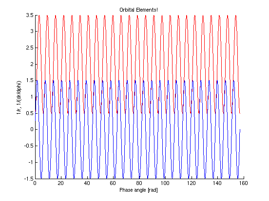
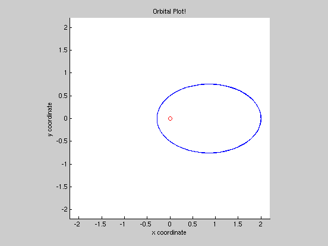

Contents
One Body Orbits
%BY: JAMES T. KEANE, 4/10/2010, UMD
Boundary Conditions
The options here help set up the conditions for the integration. Without proper parameters, the integration won't go smoothly...
options = odeset('reltol', 1e-6, 'abstol', 1e-8); % Initial conditions for 1/radius (0.5) and 1/dR/dp (0), respectively. % Currently, these constants are fairly arbitrary (although as you might % guess, not all initial conditions will actually result in a nice orbit!) Z0 = [0.5;0]; % The starting range of phase is set from 0 to 25*2pi. Recall that in % spherical coordinates, one revolution is equivelant to 2 pi. So 25*2pi % is equivelant to about 25 orbits. PHASE = [0, 25*2*pi];
Integration
Here we're using one particular ordinary differnetial equations solver: "ode45". It's taking a function generated by some outside .m file and integrating it with the boundary conditions (PHASE, Z0) under the ODE options (options) we set earlier.
[P, Z] = ode45('OneBodyOrbitsFN', PHASE, Z0, options); % MATLAB is particular and requires that all functions to be integrated be % specified in their own 'function' m files. You CANNOT just put the % equation in here!
Plotting the Results of the Integration
First, let's plot the results of the integration (1/r and 1/dr/dp)
figure(1) % We're opening a new window to plot in. hold on plot(P,Z(:,1),'RED') % Plotting 1/R as a function of phase - in red plot(P,Z(:,2),'BLUE') % Plotting 1/dR/dp as a function of phase - in blue xlabel('Phase angle [rad]') % Generating the x-axis label ylabel('1/r, 1/(dr/dphi)') % Generating the y-axis label title ('Orbital Elements!') % Generating the Title of the plot hold off
Plotting the Actual Orbit
Remember, we've been integrating in terms of 1/R --- so we must convert back to R in order to get an orbital plot like we expect:
ONE=ones(1,size(Z,1)); R=(transpose(ONE))./Z(:,1); % Next, we convert from the p and R we have to x and y coordinates, to % make plotting easier. X=R.*cos(P); Y=R.*sin(P); % Finding the maximum extent of R will help us generate nice plots that % fit the orbit's size. RMAX=max(R)*1.1; % Now to actually plot it up! figure(2) % Opening a new plotting window. hold on axis([-RMAX RMAX -RMAX RMAX]); axis square % Making the window the right size, and square in shape. plot(X,Y) % Plotting the actual orbit. plot(0,0,'RO') % Putting a little circle at the center - where the Sun is. xlabel('x coordinate') % Generating the x-axis label ylabel('y coordinate') % Generating the y-axis label title ('Orbital Plot!') % Generating the Title of the plot hold off % All done!